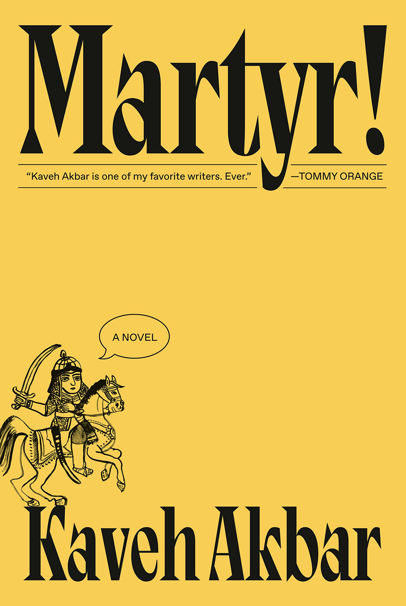

Martyr!
by Kaveh Akbar
NEW YORK TIMES BESTSELLER • SHORTLISTED FOR THE NATIONAL BOOK AWARD • ONE OF THE NEW YORK TIMES BOOK REVIEW'S 10 BEST BOOKS OF THE YEAR • A TIME MUST-READ BOOK OF THE YEAR • A newly sober, orphaned son of Iranian immigrants, guided by the voices of artists, poets, and kings, embarks on a remarkable search for a family secret that leads him to a terminally ill painter living out her final days in the Brooklyn Museum. Electrifying, funny, and wholly original, Martyr! heralds the arrival of an essential new voice in contemporary fiction.
“Kaveh Akbar is one of my favorite writers. Ever.” —Tommy Orange, Pulitzer Prize–nominated author of There There
“The best novel you'll ever read about the joy of language, addiction, displacement, martyrdom, belonging, homesickness.” —Lauren Groff, best-selling author of Matrix and Fates and Furies.
Cyrus Shams is a young man grappling with an inheritance of violence and loss: his mother’s plane was shot down over the skies of the Persian Gulf in a senseless accident; and his father’s life in America was circumscribed by his work killing chickens at a factory farm in the Midwest. Cyrus is a drunk, an addict, and a poet, whose obsession with martyrs leads him to examine the mysteries of his past—toward an uncle who rode through Iranian battlefields dressed as the angel of death to inspire and comfort the dying, and toward his mother, through a painting discovered in a Brooklyn art gallery that suggests she may not have been who or what she seemed.
Kaveh Akbar’s Martyr! is a paean to how we spend our lives seeking meaning—in faith, art, ourselves, others.
Reading period: -